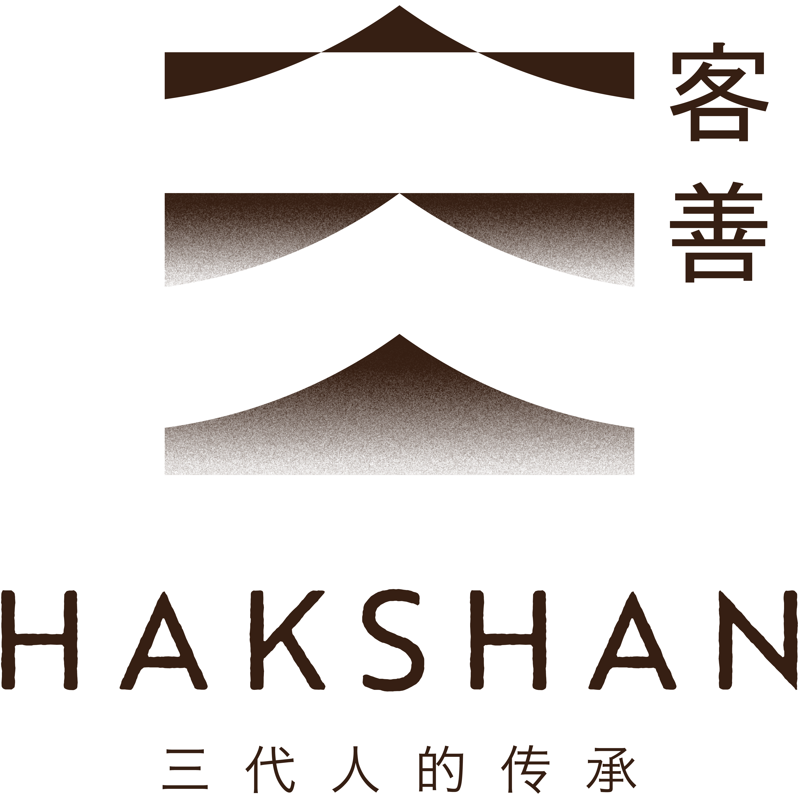

The book is not really a book. It's a stack of yellowed paper, soy stains, and margin notes our grandmother kept in a tin under the rice barrel. We are still cooking out of it. 那本食谱，其实只是奶奶藏在米缸下的一沓泛黄纸，沾着酱油渍，写满旁批。我们至今仍照着它来做菜。
Read the story阅读故事 →A tin-roofed kitchen in Hulu Selangor. Salted chicken cooked over rambutan-wood fire for villagers walking home from the rubber tap. 乌鲁雪兰莪一间锌板顶小厨房，红毛丹木火上焗盐鸡，喂给从橡胶园归来的村民。
Father moves the family to Kepong. A two-table shophouse with one wok and one rice cooker. The recipe book travels with him. 父亲举家迁至甲洞，开了一间两张桌的店屋，一锅一镬。食谱也跟着搬了家。
The third generation opens the first dining room in USJ. Same dishes. Same book. New chairs. 第三代在 USJ 开出第一间餐厅。菜还是那些菜，食谱还是那本，只是椅子换了。
Nine dining rooms across Klang Valley. Every outlet runs a charity table — one seat that always belongs to someone else. 九家分店遍布巴生谷，每家都设有「慈善桌」，那张桌永远留给别人。
Free-range hen, sea salt, kraft paper. Forty minutes in the embers. 走 地 鸡、海 盐、牛 皮 纸，炭 火 中 四 十 分 钟。
Five-spice belly steamed with pickled mustard greens, the way Ah Por taught it. 五 香 三 层 肉，与 阿 婆 腌 的 梅 干 菜 同 蒸。
Taro and tapioca, pinched by hand. Chewy at the centre, savoury at the edge. 芋 头 与 木 薯，一 颗 颗 手 捏，中 心 软 糯，边 缘 咸 香。
Twelve herbs, ground in a wooden mortar. A bowl that drinks like a meal. 十 二 种 香 草，杵 臼 现 磨。一 碗 茶，也 是 一 顿 饭。
Three hours on low flame, young ginger sprouts, dark caramel sauce. 三 小 时 慢 火，姜 芽 爆 香，老 抽 收 汁。
Glutinous rice wine, kampung chicken, ginger, sesame oil. 糯 米 酒、甘 榜 鸡、老 姜、麻 油。
Three hours, one pot,
and a kitchen that has nothing
left to do but wait.
三 小 时，一 锅，
厨 房 里 除 了 等，
无 事 可 做。
慢 火 细 炖 · 自 1958
Hakshan is Malaysia's first dining-with-charity restaurant. A fixed portion of every bill goes to community kitchens, elder-care meals, and scholarships for kitchen apprentices from rural Hakka villages. We don't print the amount on the receipt. You just know. 客善是马来西亚首家「用餐即行善」的餐厅。每一张账单都有固定比例，捐给社区厨房、长者送餐与乡村客家学徒奖学金。我们不会把金额印在收据上，但你心里清楚。
Walk-ins welcome at every outlet. Book ahead for parties of six or more, private rooms, or the charity table. 所有门店欢迎散客。六人以上、包房或慈善桌请提前预约。